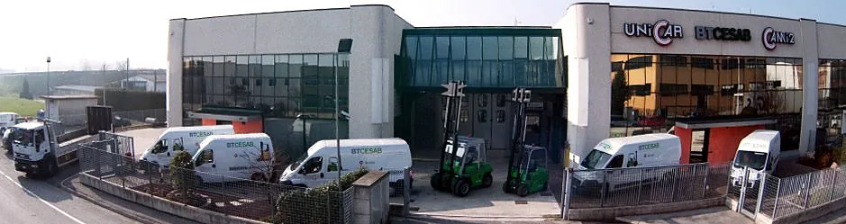
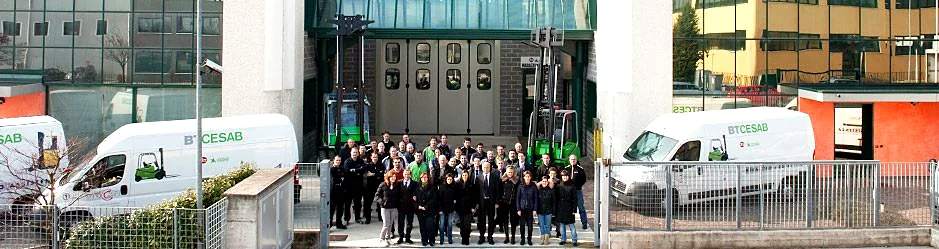

Consulenti, più che riparatori.
Assistenza e ricambi per carrelli elevatori, Padova
Lunedì-venerdì 8-12.30 e 14-18.30, sabato e domenica chiuso.
Fuori orario? Mandateci la foto della targhetta
In azienda con il furgone, anche nei casi più ostici
- Carrello fermo
- Negli orari chiamate l'officina. Fuori orario scriveteci dove si trova il carrello e cosa succede.
Carrello fermo? Scriveteci - Padova e provincia
- I tecnici degli interventi esterni vengono da voi con il furgone. Fuori provincia? Chiamateci.
- Carrelli sostitutivi
- In caso di riparazione o revisione, per garantire continuità al ciclo produttivo.
- Toyota, BT, Cesab
- E qualsiasi altra marca di carrello elevatore, elettrico o diesel, anche da magazzino.
Che cosa facciamo
- 01RiparazioneCarrelli elettrici e diesel, anche da magazzino. In officina o da voi.
- 02Manutenzione programmataContratti per i parchi carrelli, alle scadenze concordate.
- 03Controlli di sicurezzaVerifiche annotate sul registro, come chiede l'articolo 71.
- 04RicambiOriginali e di tutte le marche, anche fuori produzione.
- 05Batterie e caricabatterieRiparazione delle batterie, assistenza autorizzata per i caricabatterie.
- 06Impianti elettroniciTrasformazioni e riparazioni degli impianti dei carrelli.
- 07Anelli gommatiVendita e montaggio, con gomme, batterie e olio.
- 08Vendita e noleggioCon la consociata Cami2, al numero 16 di via Canada: cami2.it
Ricambi, anche fuori produzione
Qualsiasi tipo e marca di ricambio, anche prodotto all'estero o uscito di produzione: originali Toyota, BT e Cesab e di tutte le altre marche. Kit di aggiornamento e materiali di consumo: batterie, gomme, anelli gommati, olio.
Cosa mandarci
- Marca, modello e matricola del carrello, dalla targhetta
- Il pezzo o il codice, e la quantità
- La foto della targhetta e quella del pezzo
L'officina è in via Canada 12, Padova: lunedì-venerdì 8-12.30 e 14-18.30, telefono 049 8792361.
Posta nel browser? Copiate il testo e mandatelo a unicar@protec.it
Catene ogni tre mesi, tagliando ogni anno
Il D.Lgs. 81/2008, all'articolo 71, chiede di tenere i carrelli in efficienza e di annotare le verifiche su un registro: funi e catene si controllano ogni 3 mesi, il tagliando annuale è la buona prassi, le registrazioni si conservano per 3 anni.
Con un contratto di manutenzione programmata, controlli e tagliando si fanno alle scadenze concordate con voi.
Per il preventivo
- Marca e modello dei carrelli, elettrici o diesel
- Quanti sono e in quale comune lavorano
- L'assistenza che avete oggi, se volete cambiarla
Consulenti, più che riparatori.

«Per ogni nuova unità presa in carico, si procede con un esame tecnico approfondito, si definisce il piano d'intervento e si concorda con il cliente il metodo di operazione.»
Unicar è l'officina a cui la consociata Cami2 affida l'assistenza tecnica dei carrelli. Cami2, al numero 16 della stessa via, li vende e li noleggia: insieme vi assistono e consigliano prima e dopo la vendita.
Carrello fermo? Chiamate l'officina
049 8792361r.a.- Lunedì-venerdì
- 8-12.30 e 14-18.30
- Sabato e domenica
- Chiuso, come nei giorni festivi
Orari della sede di via Canada, da confermare con l'officina.
Carrello fermo
Il numero qui sopra, negli orari. Fuori orario un'email con la foto della targhetta e dove si trova il carrello.
Ricambi
Un'email a unicar@protec.it con la targhetta, il codice e la quantità.
Manutenzione e controlli
Il preventivo con il modulo qui sotto: marca, modello e quanti carrelli.
La sede
Via Canada 12, 35127 Padova
Indicazioni stradali